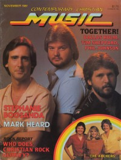

<!DOCTYPE PUBLIC "-//W3C//DTD XHTML 1.0 Transitional//EN" "http://www.w3.org/TR/1/DTD/1-transitional.dtd">
 xmlns="http://www.w3.org/1999/" xml:lang="en" lang="en">

<head>
<meta http-equiv="Content-Type" content="text; charset=utf-8" />
<title>Tim Sheppard profile - timeline view :: CMnexus</title><link rel="stylesheet" href="../articles.css" type="text/css" title="CMnexus" /><meta name="viewport" content="width=device-width" /><meta name="title" content="Tim Sheppard profile - timeline view :: CMnexus" /><meta name="color-scheme" content="light dark" /><meta name="description" content="A media coverage index of Tim Sheppard, including a discography, viewed as a timeline." /><meta name="theme-color" content="#669966" /><meta name="theme-color" content="#25282a" media="(prefers-color-scheme:dark)" /><meta name="keywords" content="Tim Sheppard, discography, albums" /><link rel="canonical" href="Tim_Sheppard" /><link rel="image_src" href="../images/covers/CCM1981_11_5__pr20.jpg" /><link rel="help" href="../about/" /><link rel="home" href="../" />
<script type="application/ld+json">{"@context":"http:\/\/schema.org","@type":"MusicGroup","name":"Tim Sheppard","album":[{"@type":"MusicAlbum","datePublished":"1976","name":"Diary"},{"@type":"MusicAlbum","datePublished":"1977","name":"Inside My Room"},{"@type":"MusicAlbum","datePublished":"1979","name":"Song Tailor"},{"@type":"MusicAlbum","datePublished":"1981","name":"Forever"},{"@type":"MusicAlbum","datePublished":"1981","name":"Holm, Sheppard & Johnson"},{"@type":"MusicAlbum","datePublished":"1989","name":"I Am Determined"},{"@type":"MusicAlbum","datePublished":"1989","name":"Soldiers Again"}],"isFamilyFriendly":true,"image":[{"@type":"ImageObject","contentUrl":"http:\/\/cmnexus.org\/images\/covers\/CCM1981_11_5__pr20.jpg","caption":"Tim Sheppard featured on Contemporary Christian Music, November 1981"}]}</script>
<link rel="apple-touch-icon" type="image/png" href="../apple-touch-icon.png" />
</head>
<body bgcolor="#000067" text="#000000" link="#000066" vlink="#000066" alink="#660000" itemscope itemtype="http://schema.org/WebPage">
<table bgcolor="#FFFFFF" width="100%" cellspacing="0" cellpadding="8" class="p100pc" id="maintable">
<tr valign="top" class="">
<td bgcolor="#669966" colspan="2" class="navcolor noprint p0tnytny navtop" style="padding-bottom:0px" itemscope itemtype="http://schema.org/SiteNavigationElement">
<div  id="pagehead" class="tnytnytnyonlyin">
<b><a href="../"
title="CMnexus" border="0" class="img" align="center">CMnexus</a></b>
<span class="smalltnytny tnytnytnyonlyoff">: <i>Contemporary Christian culture, music, and media.</i></span>
</div>
<ul class="navbar nodisc din" style="padding-top:.5em;">
<li class="pr2em din mainnav" ><a title="Browse magazines" href="../magazines/">Magazines</a></li>
<li class="pr2em din mainnav" ><a title="Browse artists &amp; authors" href="index">Profiles</a></li>
<li class="din mainnav" ><a title="GMA Dove Award nominees and winner listings" href="../awards/Dove_Awards">Dove Awards</a></li>

</ul>

</td>
</tr>
<tr valign="top" class="vaT">
<td class="vaT" id="cocol" width="*">
<div class="vaT flL b600" itemprop="breadcrumb"><span class="printonly">cmnexus.org</span><a class="noprint tnytnyonlyoff" href="../" title="Front page of the CMnexus" itemprop="url"><span class="tdn">CM</span>nexus</a><span class="tnytnyonlyoff"> &rarr; </span><a href="index" title="Root index of all artists: Choose letter" rel="up up" itemprop="url"><span itemprop="name">Profiles</span></a> &rarr; <a href="S" title="All artists whose names begin with 'S'" rel="up" itemprop="url"><span itemprop="name">S</span></a></div><h1 class="sectiontitle clB mb0">Tim Sheppard</h1><div class="m600px m0px" itemscope itemtype="http://schema.org/MusicGroup"><table class="flR flNtnytny"><caption class="smcap"><b>On the cover</b></caption><tr><td align="center" class="lineC q3e pbia"><a href="../magazines/CCM/1981/page10" title="Contents of Contemporary Christian Music Nov 1981, v. 4, i. 5"></a><br />November 1981<br /><span class="magazine">Contemporary Christian Music</span></td></tr></table><h2 class="mt25pcempr mb1pr">Media coverage:</h2><ul class="mt0"><li class="neg15em">Jun 1980 in <span class="magazine"><a href="../magazines/CCM/1980/page6" title="Contents of Contemporary Christian Music Jun 1980, v. 2, i. 12">Contemporary Christian Music</a></span> "Talent: Tim Sheppard", by <a href="Ron_Velten/writing/page1" title="Writing credits for Ron Velten, page 1">Ron Velten</a> </li><li class="neg15em">Nov 1981 in <span class="magazine"><a href="../magazines/CCM/1981/page10" title="Contents of Contemporary Christian Music Nov 1981, v. 4, i. 5">Contemporary Christian Music</a></span> "The Album", by <a href="Carolyn_A._Burns/writing/page1" title="Writing credits for Carolyn A. Burns, page 1">Carolyn A. Burns</a> </li></ul><h2 id="albums" class="pbaa mt25pcempr mb1pr">Albums &amp; reviews:</h2><div itemprop="albums" class=""><div class="pbia"><span itemscope itemtype="http://www.schema.org/MusicAlbum"><span itemprop="datePublished">1976</span>: <span itemprop="name"><span class="album" title="The album 'Diary' is by Tim Sheppard">Diary</span></span></span><br /><br /></div><div class="pbia"><span itemscope itemtype="http://www.schema.org/MusicAlbum"><span itemprop="datePublished">1977</span>: <span itemprop="name"><span class="album" title="The album 'Inside My Room' is by Tim Sheppard">Inside My Room</span></span></span><br />
<ul class="mt0"><li class="neg15em">Aug 1977 in <span class="magazine"><a href="../magazines/Christian_Life/1977/page3" title="Contents of Christian Life Aug 1977, v. 39, i. 4">Christian Life</a></span>, by <a href="Janice_Gosnell_Franzen/writing/page4" title="Writing credits for Janice Gosnell Franzen, page 4">Janice Gosnell Franzen</a> </li></ul>
</div><div class="pbia"><span itemscope itemtype="http://www.schema.org/MusicAlbum"><span itemprop="datePublished">1979</span>: <span itemprop="name"><span class="album" title="The album 'Song Tailor' is by Tim Sheppard">Song Tailor</span></span></span><br />
<ul class="mt0"><li class="neg15em">Nov 1979 in <span class="magazine"><a href="../magazines/Logos_Journal/1979/page1" title="Contents of Logos Journal Nov 1979, v. 9, i. 6">Logos Journal</a></span>, by <a href="Doug_Holck/writing/page1" title="Writing credits for Doug Holck, page 1">Doug Holck</a> </li></ul>
</div><div class="pbia"><span itemscope itemtype="http://www.schema.org/MusicAlbum"><span itemprop="datePublished">1981</span>: <span itemprop="name"><span class="album" title="The album 'Forever' is by Tim Sheppard">Forever</span></span></span><br />
<ul class="mt0"><li class="neg15em">Nov 1981 in <span class="magazine"><a href="../magazines/Christian_Herald/1981/page5" title="Contents of Christian Herald Nov 1981, v. 104, i. 10">Christian Herald</a></span>, by <a href="Ron_R._Lee/writing/page3" title="Writing credits for Ron R. Lee, page 3">Ron R. Lee</a> </li><li class="neg15em">May 1982 in <span class="magazine"><a href="../magazines/Charisma/1982/page2" title="Contents of Charisma May 1982, v. 7, i. 9">Charisma</a></span>, by <a href="Bob_Darden/writing/page1" title="Writing credits for Bob Darden, page 1">Bob Darden</a> </li></ul>
</div><div class="pbia"><span itemscope itemtype="http://www.schema.org/MusicAlbum"><span itemprop="datePublished">1981</span>: <span itemprop="name"><span class="album" title="The album 'Holm, Sheppard & Johnson' is by Dallas Holm, Tim Sheppard, Phil Johnson">Holm, Sheppard & Johnson</span> with <a href="Dallas_Holm" class="profile"  title="Profile of Dallas Holm">Dallas Holm</a>, <a href="Phil_Johnson" class="profile"  title="Profile of Phil Johnson">Phil Johnson</a></span></span><br /><br /></div><div class="pbia"><span itemscope itemtype="http://www.schema.org/MusicAlbum"><span itemprop="datePublished">1989</span>: <span itemprop="name"><span class="album" title="The album 'I Am Determined' is by Tim Sheppard">I Am Determined</span></span></span><br /><br /></div><div class="pbia"><span itemscope itemtype="http://www.schema.org/MusicAlbum"><span itemprop="datePublished">1989</span>: <span itemprop="name"><span class="album" title="The album 'Soldiers Again' is by Dallas Holm, Tim Sheppard, Phil Johnson">Soldiers Again</span> with <a href="Dallas_Holm" class="profile"  title="Profile of Dallas Holm">Dallas Holm</a>, <a href="Phil_Johnson" class="profile"  title="Profile of Phil Johnson">Phil Johnson</a></span></span><br />
<ul class="mt0"><li class="neg15em">Jul 1990 in <span class="magazine"><a href="../magazines/Christian_Herald/1990/page2" title="Contents of Christian Herald Jul 1990, v. 113, i. 4">Christian Herald</a></span>, by <a href="Peter_Gross/writing/page7" title="Writing credits for Peter Gross, page 7">Peter Gross</a> </li></ul>
</div></div><h2 class="pbaa mt25pcempr mb1pr">Award Summary <sup class="nosmcap">(<b><small><span class="blk">Nominations</span> / <span class="blk hlwin">Wins</span></small></b>)</sup></h2>
<a href="../awards/Dove_Awards" class="event" title="Information about Dove Awards" >Dove Awards</a><ul class="mt0 col2pr"><li itemscope class="neg15em pbia"><a href="../awards/Dove_Awards/1976" class="event" title="Information about the 1976 Dove Awards" >1976 Dove Awards</a><ul><li itemscope class="neg15em  printel"><span class=" blk"><small><a href="../awards/Dove_Awards/Song_of_the_Year" class="event" title="Information about Song of the Year related categories of the Dove Awards" >Song</a></small>: &quot;Would You Believe In Me?&quot;</span>&nbsp;</li>
</li></ul></ul><h2 class="pbaa mt25pcempr mb1pr">Books about Tim Sheppard</h2><ul class="mt0">
<li itemscope itemtype="http://schema.org/Book" class="neg15em">"<span>Tim Sheppard</span>"  in <i itemprop="name" class="book">The Encyclopedia of Contemporary Christian Music</i> (<span itemprop="author"><a href="Mark_Allan_Powell" class="profile"  title="Profile of Mark Allan Powell">Mark Allan Powell</a></span>, <span itemprop="datePublished">2002</span>).</li>
</ul></div></td><td class="noprint lineC" style="min-width:150px;" width="150px" itemscope itemtype="http://schema.org/WPSideBar" id="rsidebar"><div><b>CMnexus</b> <i>(noun)</i><br />The magazine index<br />of modern music<br />and Christianity<br /></div></td></tr><tr class="smalltnytny" itemscope itemtype="http://schema.org/WPFooter"><td id="footer" class="navcolor pbnw" colspan="2"><div class="lineC">&copy; 2011 CMnexus. Last updated May 2025.<span class="printonly"> Contact: </span> <span class="noprint"> Rants and other correspondence to: </span> <!--BL-->editor -AT- cmnexus<span class="noshow"><!--BL--></span> -D&Oslash;T- org <a title="About the Nexus, general information" href="../about/" class="noprint">About</a></div></td></tr></table></body><>